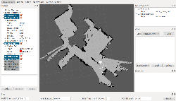

Autonomous Car Summary
The information for my autonomous car project is starting to get a bit spread out between all the update posts, so I though making a nice summary was in order.
In part 1, I laid out my plans for the navigation algorithm and spent some time working on the computer vision part of the project. I was looking at sending an unboard camera image from my Android phone to a laptop to do some lane detection. The large variation between different roads posed a problem. I did get the algorithm to work pretty well with a perfect-looking road. There were also some issues with lag between sending the image, processing, and sending it back.
Python Asteroids Game
This is the final project for the Interactive Python course. The game runs from the browser using the SimpleGUI plugin. It works best on Google Chrome. Here's a link to the Asteroids Game
Autonomous Car in Design Contest
I entered my autonomous car into a design contest held by the makers of the ChipKit board that I used. Here's the video I used for my entry.
To help explain the car's navigation algorithm I made a flow chart that shows how each part of the algorithm interacts with the sensors (click for a larger image).
{kind=link}
ROS on a Roomba

I came across an unused iRobot Roomba at FUBAR labs and though this would be the perfect opportunity to build a robot using the Robotic Operating System (ROS). ROS is basically software that's used integrate all a robot's sensors (encoders, depth camera, laser scanner ect..) with the code that's used to control it. All of the sensors run as a node. For example, the Kinect sensor node publishes its depth data. The SLAM (localization and mapping) node will uses the Kinect data to determine the robot's location and publish to other nodes. Each node is separate from the others so it's easy to change or add new ones. ROS also has a ton of built in libraries that work with different servos, laser scanners, and other sensors.
The Roomba is essentially the same ...
Autonomous Car pt.4
It finally drives!
I've done a lot more work on the code for the autonomous car. I played around with running the GPS heading updates through a FIFO array to try and smooth out any irregular data before sending it to the Kalman filter. I was a bit worried that this would slow down the heading updates too much, and it did. It evens out the data, but also causes a significant lag, making the car pretty much undriveable. I commented out the FIFO code, but left it in there in case anyone finds a use for it later on. You can find the latest version of my navigation code on my Github page.
I started playing around with the core timer on the PIC micro. Right now I'm using the core timer to change the update rate for the SD logger and the LCD screen. Previously, both of them were updating every time through the control loop. With the control loop running at around 50Hz, it produces a ton of data. ...
Hacked Roomba Motors and Related Robots
I acquired a broken 5XX series iRobot Roomba courtesy of FUBAR Labs and decided to tear it apart to see what useful parts I could harvest. I ended up with many IR emitters/receivers, power FETs with heatsinks, but the biggest surprise was the motors. I expected to get some relativly low cost motors with an equally cheap encoder. Instead, I got two nice geared motors with digital encoders!
Some tests with the motors showed that they were geared 1:64 and ~90rpm at 12V. The motor has a radial magnet hall effect encoder with 8-bit resolution (265 ticks). In the video, I am using an arduino to count encoder ticks with a rising interrupt and PID control to make to motor turn one revolution. The scope is showing the ...